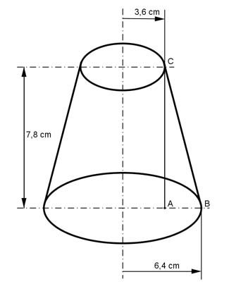
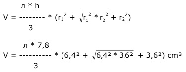

Aufgabe 251 Wie groß sind das Volumen V und die Oberfläche O des dargestellten Körpers?  Kegelstumpf:  V = л * 2,6 * (40,96 + 23,04 + 12,96) cm³ V = 628,3 cm³ Kegelstumpfoberfläche: AB = 6,4 cm - 3,6 cm = 2,8 cm Satz von Pythagoras im Dreieck ABC: BC² = AB² + AC² = 2,8² cm² + 7,8² cm² = 68,68 cm² |√ BC = 8,3 cm = s O = Kreis 1 + Kreis 2 + Kegelstumpfmantel O = л * r1² + л * r2² + л * s * (r1 + r2 ) cm² = O = л * 6,4² + л * 3,6² + л * 8,3 * (6,4 + 3,6 ) cm² = O = 128,6 cm² + 40,7 cm² + 260,6 cm² = 429,9 cm²